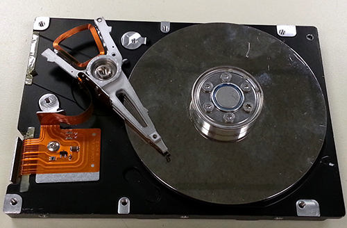

Virtual Computer Tour
Stop #4: Storage
The term storage is used to refer to hardware that is used to store data indefinitely, and which does not require that the device have power to retain the data. The most common storage device in use today is the hard drive.

While there are other options available for storing data today, the hard drive remains the most common for several reasons.
First, it is extremely reliable. While hard drives can go bad or be damaged, if you keep the hard drive safe and cool, you are not likely to have problems for at least 10 or 15 years (and by that time, you will probably have replaced the hard drive with a larger model).
Second, it is relatively inexpensive. A hard drive that holds 1 terabyte (TB) of data (that's a trillion bytes!) typically costs less than $100 in today's market.
Finally, it is versatile. They are a good compromise between speed and cost, and they allow you to modify data you have already saved very easily.
Flash storage--like you find in thumb drives or flash memory cards you might use in your phone or camera--is much faster than hard drives, and in some ways, it is also more reliable. A hard drive can be erased by strong magnetic fields, and it wouldn't really survive a run through a washing machine, but flash storage can survive both (as long as you let it dry completely before using it). However, flash storage is much more expensive. You would be lucky to find a solid state drive that holds 128 gigabytes (GB) for less than $100 today. (Remember that a gigabyte is about one billion, so it would take about seven 128GB solid state drives to hold the same amount of data that can be stored on a 1 TB hard drive.)
We've just about finished the tour now. Please click the button below to open an assignment that will help you see how this information relates to your own computer. You can use the buttons at the top of this page if you need to review any of the steps on our tour.